Embedded programming
.
The weekly assignment focuses on the understanding of a microcontroller datasheet, the description of programming process and the final result: program the modified "echo hello-world board".
First of all I’ve found on the web the mentioned DATASHEET. The ATtiny44A is a small, cheap microcontroller that are convenient for running simple programs. The datasheet can be found at the ATMEL specific page. What is a DATASHEET ? A datasheet, data sheet, or spec sheet is a document that summarizes the performance and other technical characteristics of a product, machine, component (e.g., an electronic component), material, a subsystem (e.g., a power supply) or software in sufficient detail to be used by a design engineer to integrate the component into a system. Typically, a datasheet is created by the component/subsystem/software manufacturer and begins with an introductory page describing the rest of the document, followed by listings of specific characteristics, with further information on the connectivity of the devices. In cases where there is relevant source code to include, it is usually attached near the end of the document or separated into another file.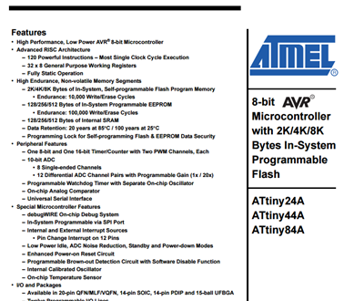
In this specific case I’ve found very useful the following image. Please note the RED DOT I’ve sketched refer to a very small point that is physically present in the processor and that’s a big help to correctly position the processor itself. Further detail about the “pin out” could be find inside the document.). 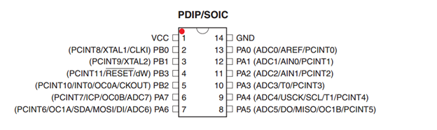
The schematic and board file used to start to design the new "echo hello-world board" (software: Eagle) has been a great help to understand and check the routes from the processor to the other parts of the PCB. Once opened the board in Eagle you just have to click (a) the small “i” (info) to obtain detailed information about the component and (b) the small “eye” to select the routes from start to end. The following three figures have been reported in order to show the functionality of “i” (info) function. Follow the same procedure for the other processor pins. 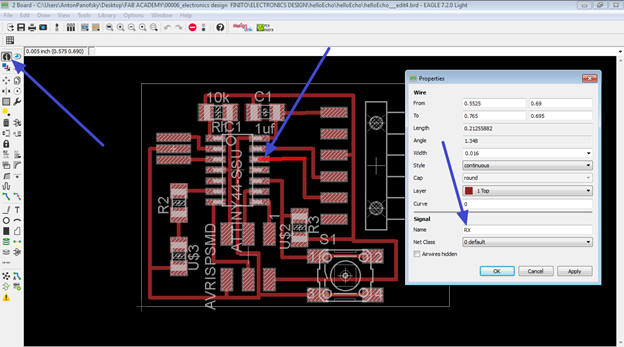 RX pin
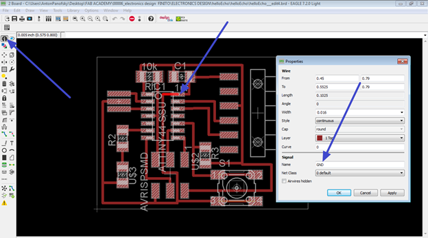 GND pin
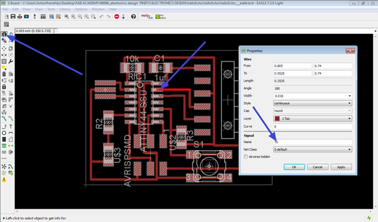 TX pin
The following three figures have been reported in order to show the functionality of “eye” function. Follow the same procedure for the other processor pins.
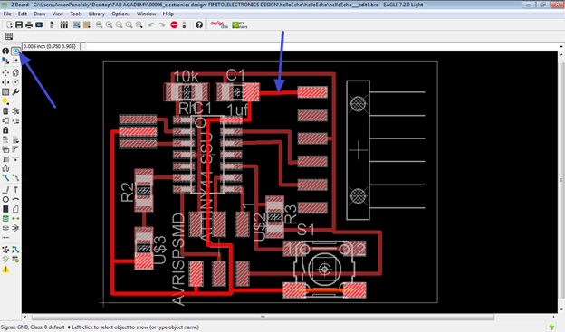 Tracking the GND route(s)
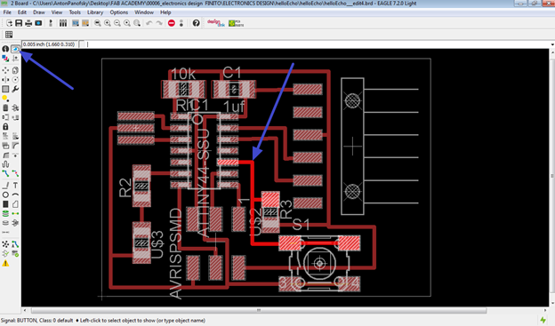 Tracking the BUTTON route(s)
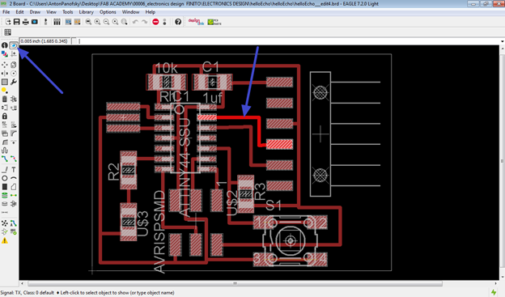 Tracking the TX route(s)
Once defined the connections/PINOUT I’m now ready to make a description of PROGRAMMING PROCESS.
Please note that, at the beginning of the procedure, I had lot of problems using Windows 7, so I’ve switched to Ubuntu 12.04 LTS.
I had to follow the specific rules described into this tutorial
because Avrdude, in Ubuntu, needs “sudo” access in order to send your Arduino code to the echo hello-world board.
I also put the Attiny44 in the following folder (sketchbook folder). If you skip this step you won’t be able to see the processor in the Arduino IDE list. To reach this folder in Arduino, just search for PREFERENCES.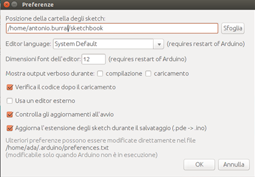
After the required steps, I should be able to burn the bootloader. I connect all the component(s)/cable(s) as the following figure and I’ve selected the proper options in the Arduino IDE: ATtiny44 with external 20MHz clock.Please note that the chosen programmer is the USBASP.Please note also that the FTDI cable is necessary just for external power (you can unplug it during the sending of the sketches). 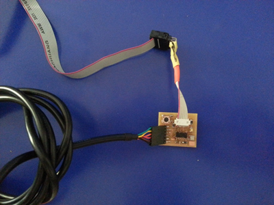
Everything went good, the correct reply has been given by the Arduino IDE: DONE BURNING BOOTLOADER. The procedure is not complete, you know have to send a “sketch” to the “echo hello-world board”.
SENDING THE SKETCHES. I’ve started my trials sending to the board the sample sketch in the Tutorial page.
I've received an alert: avrdude: warning: cannot set sck period. Please check for usbasp firmware update appears.
This is not a problem, just an alert (derived from a not updated firmware), so the upload had been succesfull.
The sample code has then been modified in different ways:
FIRST WAY: The LED is turned ON if the BUTTON is pressed.
Please note the buttonState is LOW if the button is NOT pressed.
Please note the buttonState is HIGH if the button is pressed.(code and video are following) 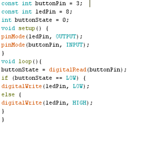
BUTTON from antonio burrai on Vimeo.
SECOND WAY: The LED is turned ON and BLINK (50ms) if the BUTTON is pressed.
Please note the buttonState is LOW if the button is NOT pressed.
Please note the buttonState is HIGH if the button is pressed. (code and video are following) 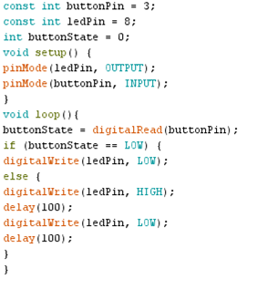
BUTTON+BLINK from antonio burrai on Vimeo.
Download area
The following files are downloadable:
| Type of file |
Description |
Link (Type of file) |
| (Working)Arduino Code |
Button; |
(INO) |
| Working)Arduino Code |
Button+Blink; |
(INO) |